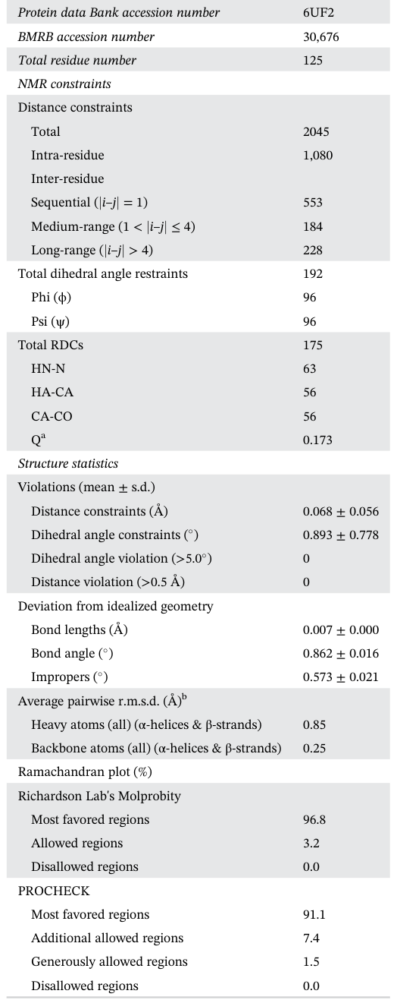

Protein Structure Determination
Solution NMR structure of Se0862, a highly conserved cyanobacterial protein involved in biofilm formation
Abstract
Biofilms are accumulations of microorganisms embedded in extracellular matrices that protect against external factors and stressful environments. Cyanobacterial biofilms are ubiquitous and have potential for treatment of wastewater and sustainable production of biofuels. But the underlying mechanisms regulating cyanobacterial biofilm formation are unclear. Here, we report the solution NMR structure of a protein, Se0862, conserved across diverse cyanobacterial species and involved in regulation of biofilm formation in the cyanobacterium Synechococcus elongatus PCC 7942. Se0862 is a class α+β protein with ααββββαα topology and roll architecture, consisting of a four-stranded β-sheet that is flanked by four α-helices on one side. Conserved surface residues constitute a hydrophobic pocket and charged regions that are likely also present in Se0862 orthologs.
| INTRODUCTION
Cyanobacteria, also referred to as blue-green algae, are ancient photosynthetic organisms and the only prokaryotes known to carry out oxygenic photosynthesis, thrive in a wide range of ecological habitats, and can produce biofilms under certain conditions. Biofilms are communities of microorganisms that are enclosed in extracellular polymeric matrices that provide protection against toxic compounds and stressful environmental factors such as extreme temperatures and pH. 1 Biofilms from cyanobacteria have been used for wastewater treatment, research of sustainable biofuels and biological by-products, and soil fertility improvement. [2][3][4][5][6][7][8][9][10][11][12] In spite of these advantages, they can also be responsible for biodeterioration and biofouling that cause economic loss. [13][14][15] Recently, there have been advances in understanding biofilm formation by cyanobacteria. For example, four small secreted proteins, EbfG1-4 (enable biofilm formation with GG-motif), of S. elongatus PCC 7942 have been found to promote biofilm-formation. 16,17 Also, Synechocystis sp. PCC 6803 mutants lacking type IV pili (T4P) are unable to aggregate and form biofilms, 18 however, impairment of T4P formation in S. elongatus resulted in biofilm-forming-mutants, unlike the wild-type strain that grow planktonically. 19 These data suggest that S. elongatus and Synechocystis employ different mechanisms for biofilm development. T4P biogenesis is under the control of the circadian clock in cyanobacteria, 20 used for extension, adhesion, retraction and motility, and plays a role in natural transformation by pulling exogenous DNA close to the cell surface. 21,22 Synpcc7942_0862 encodes a conserved hypothetical protein, Se0862, in S. elongatus, and its inactivation leads to biofilm development. 19 In order to gain insights into Se0862 as a biofilm regulator we cloned the gene, expressed it in E. coli, purified the protein, and determined the solution structure by NMR.
| NMR solution structure of Se0862
Purified Se0862 elutes from a preparative size-exclusion column as a monomer (Figure S1). A two-dimensional 1 H-15 N HSQC NMR spectrum of Se0862 obtained at a static magnetic field strength of 14.1 T is shown in Figure 1a. Standard heteronuclear triple resonance NMR experiments were used to assign backbone and sidechain S1), as based on differences between their 13 C β and 13 C γ chemical shifts 23 (range: 2.54-5.62 ppm; measured using the CC(CO)NH experiment 24 ) and the program Promega. 25 The structure of Se0862 was calculated using XPLOR-NIH 26 with 2045 distance restraints, 192 ϕ, ψ backbone dihedral angle restraints determined by TALOS-N, 27 and 63 15 N-H, 56 13 C α -H α , and 56 13 C α -13 C 0 residual dipolar coupling restraints. Figure 1b shows the family of the 10 lowest-energy structures out of 100. Statistics on the family of structures are listed in Table 1. There were no violations of NOE-derived distance restraints (threshold of 0.5 Å) or TALOS-derived dihedral angle restraints (threshold of 5 ). The family of 10 structures of Se0862 is well-defined with a root-mean-square deviation (RMSD) of 0.25 Å for backbone atoms and 0.85 Å for all heavy atoms. The ribbon representation of the average minimized structure is shown in Figure 1c. Se0862 adopts an ααββββαα topology with two antiparallel N-terminal α-helices (α1: P11-Y17; α2: Y29-Y37), a four-stranded antiparallel β-sheet (β1: I42-K46; β2: I54-T59; β3: M69-Q75; β4: D79-P89), two antiparallel C-terminal α-helices (α3: N90-R106; α4: G114-L121), two 3 10 -helices (I3-E5 and L65-A67) and a π-helix (Q105-R106) 28 (Figure 1c). According to CATH, 29 which is a database that classifies distinct globular domains into homologous superfamilies, Se0862 is a class α + β protein with roll architecture. Normalized 1 H-15 N HSQC peak intensities and order parameters, S 2 , derived from chemical shifts 27,30 are plotted in Figure 1d and suggest that two type I turns between β1 and β2 and between β3 and β4 experience local dynamics on the fast time scale, whereas the loop between α1 and α2 also undergoes motions on the intermediate time scale.

| Structural properties and potential function of Se0862
The α -helices within each antiparallel pair pack together through mostly hydrophobic interactions, as do the a Quality factor (or Q factor) is used to quantify the extent of agreement between a calculated structure and measured dipolar couplings. A Q factor below 0.2 can be used as a rule of thumb to indicate good agreement. b For RMSD calculation, residues 13 – 18, 28 – 59, 69 – 107, 114 – 120 of Se0862 were used.
β-strands within the sheet. The helices pack against one face of the β-sheet through interactions between nonpolar side chains. The hydrophobicity and solvent accessible surface area (SASA) of residues were calculated using ProtScale 31 and GETAREA 32 tools, respectively, and show that almost all conserved hydrophobic residues are buried whereas charged residues tend to be solvent exposed (Figure 2a), as is to be expected.
F I G U R E 2. Surface properties of Se0862. (a) Hydrophobicity and SASA plots of Se0862 as a function of its primary sequence. Light yellow, red, and blue rectangles indicate conserved hydrophobic, acidic, and basic residues, respectively. Dashed horizontal lines represent 0 hydrophobicity and 0.25 SASA. (b) Hydrophobic pocket (rendered yellow) and electrostatic surface potential of Se0862 with conserved residues labeled. The scale for the surface potential is from -5 k B T/e (red) to +5 k B T/e (blue). (c) Side chains of E85 and R71 in the energy-minimized average structure (left) and 10 lowest-energy structures (right). The indicated distance is between an O ε atom of E85 and an N η atom of R71 structural similarity is significant). The top 20 DALI hits are listed in Table
Several nonpolar residues, including I42, F56, M100, and L101, form a hydrophobic pocket (Figure 2b), and because many of these residues are conserved (Figure S2), the structure of the pocket might be conserved as well. Also, there is a putative salt bridge between conserved residues E85 (β4) and R71 (β3) (Figure 2c). The electrostatic surface potential of Se0862, as calculated using the APBS tool in Chimera, 33 is shown in Figure 2b with conserved acidic and basic residues labeled. A negatively charged patch is formed by the following conserved residues: residues D68, E92, E95, and D99. Two positively charged patches-(a) R27, R28, and R46, and (b) R118 and R119-are also composed of conserved residues and are separated by the negatively charged patch. The total solvent accessible surface area is 8,640 Å 2 according to PDBePISA. 34 Using Se0862 as query, PSI-BLAST identified 478 proteins with sequence identities over 40%, all from cyanobacteria, showing that Se0862 orthologs are widespread in these organisms. However, they are designated as hypothetical proteins and missing structural and functional information. A DALI 35,36 search of the Protein Data Bank identified 123 polypeptide chains with Z-scores above 2 but lower than 3.4 (Z-score > 2 suggests that S2 but they did not provide clear insights into the likely function of Se0862.
Inactivation of Synpcc7942_0862 causes biofilm formation 19 and the protein encoded by this gene is also required for natural competence, the latter of which is known to need T4P. 20 A testable hypothesis is that the negatively and positively charged regions and hydrophobic pocket of Se0862 are sites of interaction with complementary sites on T4P components to regulate biofilm formation, pili biogenesis, and/or extension in cyanobacteria.
| NMR spectroscopy
All NMR experiments were carried out at a calibrated sample temperature of 22 C on a Bruker Avance III 600 MHz spectrometer equipped with a TCI cryoprobe. 1 H chemical shifts were referenced to internal 3-(trimethyl-silyl)-1-propanesulfonic acid sodium salt (DSS). 13 C and 15 N chemical shifts were indirectly referenced to DSS using absolute frequency ratios listed on the BMRB website. NMR samples contained 0.6 mM 15 N/ 13 C-enriched protein in 350 μL NMR buffer (20 mM Tris, 100 mM NaCl, 5 mM TCEP, 0.02% NaN 3 , 10 μM DSS, pH 7.0, 95% H 2 O/5% D2O). 3D HNCACB, HN(CO) CACB, HNCO, HN(CA)CO, HBHA(CO)NH, HCCH(CO) NH, CC(CO)NH, (H)CCH-COSY, H(C)CH-COSY, (H) CCH-TOCSY experiments were used for backbone and aliphatic side-chain assignments 37 ; 2D (HB)CB(CDCG) HG and (HB)CB(CDCGCE)HE experiments were acquired for aromatic side chain assignments. 38 3D 15 Nedited, 13 C-edited NOESY-HSQC, and 4D 13 C / 13 C-edited NOESY-HSQC spectra were collected for interproton distance restraints for structure determination. A chemical shift-based structural model of Se0862 generated by CS-ROSETTA was used to guide initial NOE assignments. Please see Table S3 for further details on NMR experiments. NMR data were processed with NMRPipe 39 and analyzed using NMRFAM-Sparky. 40 All details on cloning, expression and purification of Se0862 are presenting in supplementary materials.
| NMR structure calculations
Backbone dihedral angle restraints were predicted from backbone chemical shifts using TALOS-N. 27 All NOE distance restraints were grouped into four ranges (strong, medium, weak, very weak) according to NOE cross-peak intensities. The lower distance bound for all distance restraints was set to 1.8 Å. The upper bound was 2.7 Å for strong NOEs, 3.3 Å for medium NOEs, 5.0 Å for weak NOEs, and 6.0 Å for very weak NOEs. For methyl group NOEs an additional 0.5 Å was added to the upper bound of distance restraints. Structures were calculated with XPLOR-NIH. 26 During the high temperature stage of calculations, force constants for distances (k NOE ), dihedral angles (k CDIH ), torsion angles (k tDB ), implicit solvation (EEFx, k EEFx ), angles (k ANGL ), and improper torsions (k IMPR ) were 2 kcal mol -1 Å -2 , 10 kcal mol -1 Å -2 , 0.02 kcal mol -1 Å -2 , 0.1 kcal mol -1 Å -2 , 0.4 kcal mol -1 Å -2 , and 0.1 kcal mol -1 Å -2 , respectively. In the simulated annealing stage, k NOE , k tDB , k EEFx , k ANGL , and k IMPR were gradually increased from 2 to 30 kcal mol -1 Å -2 , 0.1 to 1.0 kcal mol -1 rad -2 , 0.1 to 1.0 kcal mol -1 Å -2 , 0.4 to 1.0 kcal mol -1 rad -2 , and 0.1 to 1.0 kcal mol -1 Å -2 , respectively, and k CDIH was set to 200 kcal mol -1 rad -2 . Temperature in the simulated annealing stage was decreased from 3,500 K to 25 K in steps of 12.5 K. Structure validation statistics were generated by the PSVS web server, 41 PROCHECK, 42 and MolProbity 43 (Table 1). Calculations of surface potential and hydrophobicity 44 and structural renderings were carried out by UCSF ChimeraX. 45 α-helices, β-strands, and 3 10 and π-helices were identified using the "dssp report true" command in ChimeraX.
Data curation; formal analysis; investigation; methodology; writing-original draft; writing-review and editing. Yong-Gang Chang: Data curation; formal analysis; investigation; writing-review and editing. Roger Tseng: Data curation; formal analysis; investigation; writing-review and editing. Sergey Ovchinnikov: Formal analysis; investigation. Rakefet Schwarz:
Conceptualization; resources; writing-review and editing. Andy LiWang: Conceptualization; funding acquisition; project administration; supervision; writing-review and editing.
F. I G U R E 1 2D HSQC NMR spectrum and NMR solution structure of Se0862. (a) Assigned two dimensional 1 H-15 N HSQC spectrum of Se0862. SC, side chain. Blue dashed lines connect pairs of peaks of NH 2 groups of Asn and Gln side chains. Unassigned peaks are marked with an "x". (b) Superposition of backbone atoms of a family of 10 lowest-energy structures of Se0862. (c) Ribbon diagram of the energy-minimized average structure. (d) Plot of normalized 15 N, 1 H HSQC peak intensities (black circles) and TALOS-calculated S 2 values (blue circles) as a function of residue number. Blue dash line represents S 2 value of 0.7. The backbone resonance of residue Q23 overlaps with that of W60 and is thus its intensity is denoted with a red circle. Resonances for A24 and N25 were unobservable and are thus assumed to have near-zero peak intensities chemical shifts of 121 out of 125 residues. The four residues without any chemical shift assignments are M1, R2, A24, and N25. All nine prolyl residues-P8, P11, P19, P31, P53, P64, P66, P89, P113-adopt the trans conformation (Table
References
- Flemming H, Wingender J. The biofilm matrix. Nat Rev Microbiol 2010
- Bruno L, Pippo D, Antonaroli F, Gismondi S, Valentini A, Albertano C. Characterization of biofilm-forming cyanobacteria for biomass and lipid production. J Appl Microbiol 2012
- Egan S, Thomas T, Kjelleberg S. Unlocking the diversity and biotechnological potential of marine surface associated microbial communities. Curr Opin Microbiol 2008
- Godlewska K, Michalak I, Pacyga P, Basladynska S, Chojnacka K. Potential applications of cyanobacteria: Spirulina platensis filtrates and homogenates in agriculture. World J Microbiol Biotechnol 2019
- Ivnitsky H, Katz I, Minz D. Bacterial community composition and structure of biofilms developing on nanofiltration membranes applied to wastewater treatment. Water Res 2007
- Lau N, Matsui M, Abdullah A. Cyanobacteria: Photoautotrophic microbial factories for the sustainable synthesis of industrial products. Biomed Res Int 2015
- Liehr S, Chen H, Lin S. Metals removal by algal biofilms. Water Sci Technol 1994
- Roeselers G, Van Loosdrecht M, Muyzer G. Phototrophic biofilms and their potential applications. J Appl Phycol 2008
- Rossi F, Philippis D. Role of cyanobacterial exopolysaccharides in phototrophic biofilms and in complex microbial mats. Life 2015
- Singh R, Parihar P, Singh M. Uncovering potential applications of cyanobacteria and algal metabolites in biology, agriculture and medicine: Current status and future prospects. Front Microbiol 2017
- Wagner M, Loy A, Nogueira R, Purkhold U, Lee N, Daims H. Microbial community composition and function in wastewater treatment plants. Anton Leeuw Int J G 2002
- De Carvalho C. Marine bio films: A successful microbial strategy with economic implications. Front Mar Sci 2018
- Scheerer S, Ortega-Morales O, Gaylarde C. Microbial deterioration of stone monuments-An updated overview. Adv Appl Microbiol 2009
- Warscheid T, Braams J. Biodeterioration of stone: A review. Int Biodeter Biodegr 2000
- Parnasa R, Nagar E, Sendersky E. Small secreted proteins enable biofilm development in the cyanobacterium Synechococcus elongatus. Sci Rep 2016
- Parnasa R, Sendersky E, Simkovsky R, Ben-Asher H, Golden S, Schwarz R. A microcin processing peptidase-like protein of the cyanobacterium Synechococcus elongatus is essential for secretion of biofilm-promoting proteins. Environ Microbiol Rep 2019
- Allen R, Rittmann B. Curtiss R 3rd. Axenic biofilm formation and aggregation by synechocystis sp. Strain pcc 6803 are induced by changes in nutrient concentration and require cell surface structures. Appl Environ Microbiol 2019
- Nagar E, Zilberman S, Sendersky E. Type 4 pili are dispensable for biofilm development in the cyanobacterium Synechococcus elongatus. Environ Microbiol 2017
- Taton A, Erikson C, Yang Y. The circadian clock and darkness control natural competence in cyanobacteria. Nat Commun 2020
- Craig L, Forest K, Maier B. Type iv pili: Dynamics, biophysics and functional consequences. Nat Rev Microbiol 2019
- Ellison C, Dalia T, Vidal Ceballos A. Retraction of DNA-bound type iv competence pili initiates DNA uptake during natural transformation in vibrio cholerae. Nat Microbiol 2018
- Schubert M, Labudde D, Oschkinat H, Schmieder P. A software tool for the prediction of xaa-pro peptide bond conformations in proteins based on 13c chemical shift statistics. J Biomol NMR 2002
- Grzesiek S, Anglister J, Bax A. Correlation of backbone amide and aliphatic side-chain resonances in 13c/15n-enriched proteins by isotropic mixing of 13c magnetization. J Magnet Reson 1993
- Shen Y, Bax A. Prediction of xaa-pro peptide bond conformation from sequence and chemical shifts. J Biomol NMR 2010
- Schwieters C, Kuszewski J, Clore G. 2006
- Shen Y, Bax A. Protein backbone and sidechain torsion angles predicted from NMR chemical shifts using artificial neural networks. J Biomol NMR 2013
- Kabsch W, Sander C. Dictionary of protein secondary structure: Pattern recognition of hydrogen-bonded and geometrical features. Biopolymers 1983
- Lewis T, Sillitoe I, Dawson N. Gene3d: Extensive prediction of globular domains in proteins. Nucleic Acids Res 2018
- Berjanskii M, Wishart D. A simple method to predict protein flexibility using secondary chemical shifts. J Am Chem Soc 2005
- Wilkins M, Gasteiger E, Bairoch A. Protein identification and analysis tools in the expasy server. Methods Mol Biol 1999
- Fraczkiewicz R, Braun W. Exact and efficient analytical calculation of the accessible surface areas and their gradients for macromolecules. J Comput Chem 1998
- Baker N, Sept D, Joseph S, Holst M, Mccammon J. Electrostatics of nanosystems: Application to microtubules and the ribosome. Proc Natl Acad Sci U S A 2001
- Krissinel E, Henrick K. Inference of macromolecular assemblies from crystalline state. J Mol Biol 2007
- Holm L. Dali and the persistence of protein shape. Protein Sci 2020
- Holm L, Kääriäinen S, Wilton C, Plewczynski D. Using dali for structural comparison of proteins. Curr Protoc Bioinformatics 2006
- Cavanagh J, Fairbrother W, Palmer I, Skelton N. 1995
- Yamazaki T, Forman-Kay J, Kay L. Two-dimensional NMR experiments for correlating 13 Cβ and 1 Hδ/ε chemical shifts of aromatic residues in 13c-labeled proteins via scalar couplings. J Am Chem Soc 1993
- Delaglio F, Grzesiek S, Vuister G, Zhu G, Pfeifer J, Bax A. Nmrpipe: A multidimensional spectral processing system based on unix pipes. J Biomol NMR 1995
- Lee W, Tonelli M, Markley J. Nmrfam-sparky: Enhanced software for biomolecular nmr spectroscopy. Bioinformatics 2015
- Bhattacharya A, Tejero R, Montelione G. 2007
- Laskowski R, Macarthur M, Moss D, Thornton J. Procheck: A program to check the stereochemical quality of protein structures. J Appl Cryst 1993
- Chen V, Arendall Wb 3rd, Headd J. Molprobity: Allatom structure validation for macromolecular crystallography. Acta Cryst 2010
- Sanner M, Olson A, Spehner J. Reduced surface: An efficient way to compute molecular surfaces. Biopolymers 1996
- Goddard T, Huang C, Meng E. Meeting modern challenges in visualization and analysis. Protein Sci 2018